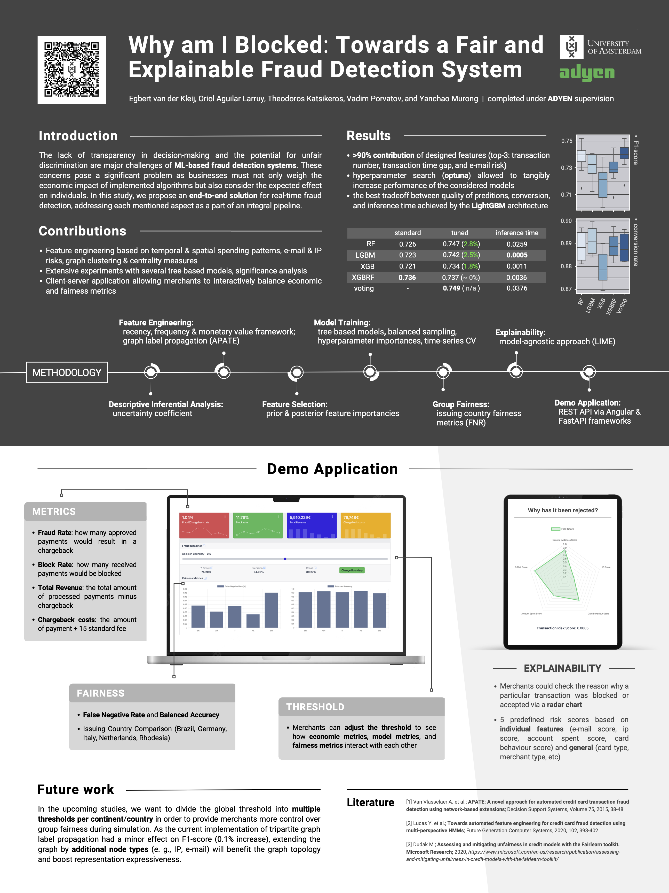
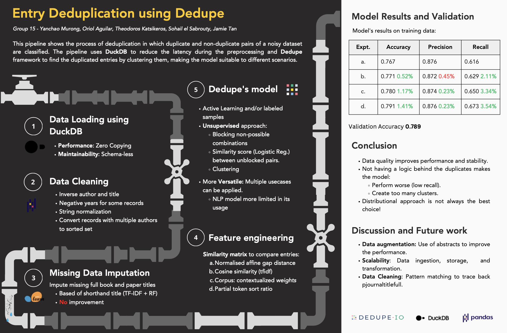
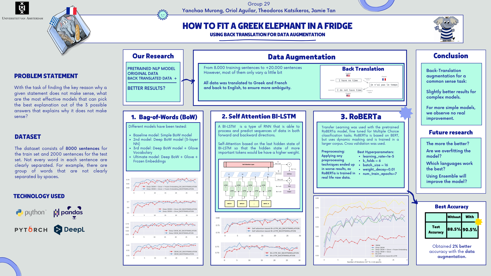
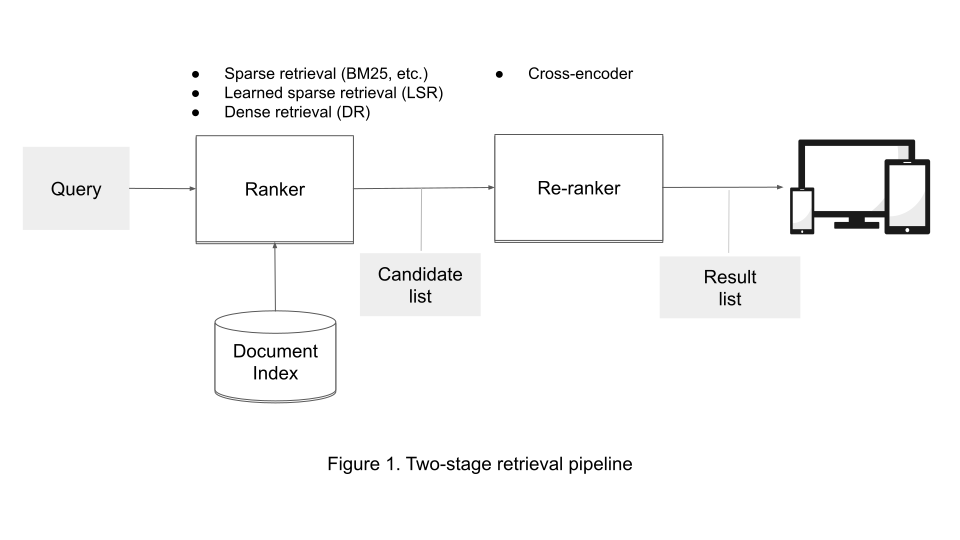

Yet another blogger.
- Why Could I Become a Perfect Fit for this Role and Your Company?
- My Past Experience Timeline
- My Technical Stack
- My Recent Master of Data Science (TL;DR)
- My Job in Renault Group (TL;DR)
- My Life
- Appendix
Hi, I am _@ymurong_ (Yanchao, MURONG), MSc Data Science student with 5 years of Tech Lead experience. My mixed background in Data Science, Machine Learning, Software Engineering, and Management has equipped me with a deep understanding of the AI/Data landscape. I have successfully managed complex projects such as Adyen’s Fraud Detection Project within tight deadlines while ensuring high-quality standards. I am a highly motivated and results-driven individual who is committed to continuous learning and growth. My unique combination of technical and management skills makes me an ideal candidate for the role of Product Manager/Technical Product Manager in various domain.
Why Could I Become a Perfect Fit for this Role and Your Company?
- I have cultivated many hard skills in software engineering domain. See My Tech Contributions in Renault Group and My Technical Stack
- I have a mixed education background: Data Science, Information System and Business, which means I can not only contribute on technical aspects, but also equips with strong soft skills on business/managerial aspects. And yes, stakeholders and sponsors needs visibility about the projects. And fantastic contributions of software engineers also needs to be recognized and promoted. See Management Contributions in Renault Group
- I have a foundational knowledge in Analytics/Data/Engineering domain and have connected many talented people in this domain thanks to my past academic experience, which means I can collaborate with researchers/engineers/analysts in a much easier way and help them in the creation of revolutionary products with newest technology. See My Recent Study Experience
- I have strong problem solving and learning ability, always ready to accept challenges to continuously improve my hard/soft skills. I have excellent academic records. See My Past Study Records
- I have broad interests in life and can be a very good team member to add some sugar and butter in the diversity of the team. See My Life
My Past Experience Timeline
- 2022 - Now: Msc Data Science Student in University of Amsterdam (Current Average GPA: 8.5/10) UvA Data Science & Artificial Intelligence at Top 20 in QS 2023 Rankings
- 2020 - 2022: Tech Lead - Backend Developer in Renault
- 2018 - 2020: Backend Developer in Renault
- 2016 - 2018: Junior Backend Developer in Credit Agricole Payment Services
- 2013 - 2016: Master in Information System Engineering Student in University of Toulouse (Rank 2nd of the class in GPA)
- 2009-2013: Bachelor of Business Studies in Beijing Institute of Technology graduated with outstanding award of Beijing (acceptance rate: 2%). School of Management and Economics at BIT has been accredited by AMBA, AACSB, and EQUIS, being 1% of the world's business schools with a “Triple Crown accreditation”. Only 9 business schools in China have triple crowns. triple-accredited-business-school
My Technical Stack
| 😎 ️ | 😎😎 | 😎😎😎 ️ | |
|---|---|---|---|
| Languages | Scala |
PL-SQL, R, Java |
Python, NodeJS, SQL |
| GCP | Dataproc |
GKE, APIGEE |
Cloud Function, PubSub, GCS,
GCE, CloudSQL,
Cloud Scheduler |
| Devops | Terraform |
Bash, K8S |
Docker-Compose, Ansible,CICD,
TDD |
| Database | BigQuery |
Oracle |
DuckDB,Postgres,Sqlite |
| Data Processing | Spark |
Pandas, Numpy |
|
| Data Viz | D3.js |
Spotfire, Echarts, D3.js |
Seaborn |
| Data Modelling | SAP BO |
ROLAP,MOLAP |
Entity-Relationship |
| Broker | SOLACE |
RabbitMQ |
|
| API Security | Oauth2, OpendID Connect,
MTLS |
||
| Web Framework | FastAPI |
Express |
|
| Middleware | API MANAGER, ESB, IDP |
||
| ML/DL | sklearn, torch, nltp,
transformers, networkx,
doWhy |
see my school project experience |
My Recent Master of Data Science (TL;DR)
Motivations (Why I choose to do a second master?)
- Very interested in new developments and trends in AI/DS domain
- To strengthen my theoretical background knowledge with optimization and statistics, machine learning and deep learning
- Get to know more talented people in AI/DS domain
- One year program in University of Amsterdam is very cost effective for working people
School Projects
Adyen Fraud Detection Project (Rank 1st ) See Poster
Represented by the Dutch payment company Adyen. I manage a team of 5 members to deliver a full-stack machine-learning project within a limited time. The project has 3 phases: Ideation, Mid-Prototype, and End-Prototype and we need to present our delivery to stakeholders from the company. During project ideation, I ensure that team members have a clear understanding of users’ pain points and collaborate on technical designs, architecture decisions, and tradeoffs. In the course of project development, I ensure that we progress in an interactive, transparent manner and focus on a minimal viable product that can deliver the highest ROI with relatively low risk.
Other projects
The following projects requires familiarity with most common python libraries in data science, machine learning and deep learning. Some projects are built with FastAPI framework. Neural-based projects are based on pre-trained models with fine-tuning.
- CV: Food Image Recognition Multi-Class Classification with EfficientNet
- NLP: Question Answer Multi-Class Classification with Bert See Poster
- IR: Document Search Engine from Scratch (Traditional: TFIDF + BM25, Neural: Bert cross-encoder, bi-encoder, sparse-retrieval) See Architecture
- (FastAPI) BigData: Academic References Deduplication at Scale with spark See Poster
- Causal Data Science - LUCAS Lung Cancer: Causal Effects Estimates and Causal Discovery (Constraint-based, Score-based and Restricted)
- Time Series Forcasting: Walmart Food Sales Forcasting with ARIMA & Prophet
Libraries: fastapi, pydantic, sqlalchemy, pickle, scipy, pytorch, transformers, pyspark, numpy, pandas, duckdb, sklearn, nltp, networkx, fairlearn, lime, shap, etc
My Job in Renault Group (TL;DR)
5951 users, 12996 active subscriptions, 1464 consumers in production
We build a marketplace-type IT application from scratch that allows developers of the whole company to manage, expose and subscribe to web services for internal and external clients with close integration with API management, Messaging brokers as well as Identity&Access management.
Management Contributions
- Manage a team of 4 people ranging from frontend developer, backend developer, and vendor product expert
- Participate in the recruitment of offshore members. Provide guidance/coaching to team members
- Manage roadmap, prioritize tasks, decouple deliverables, and guarantee deadlines
- Coordinate and cooperate with other technical teams to achieve shared objectives
- Internal communications, promotions and presentations with important stakeholders and sponsors in order to make our team's work recognized and valued
Technical Contributions
- Refactoring by applying the SOLID principle and design patterns
(NodeJS)
- Strategy, Chain, Composite, Singleton, Factory, Facade, Proxy
- Error handling + Documentation (customer faced and technical faced, we show them on our admin UI)
- New Features (NodeJS)
- add event/messaging service (solace)
- add scope based subscription with multiple identity provider support (subscribe-> request roles/scopes to service provider)
- initiate the dashboard (more functional insights for billing/usage) -> technical insights we have dynatrace
- Tooling (Python)
- Event Driven File Transfer Agent
- Agent will listen to PubSub's queue (new file arrival), push to local queue and use ThreadPoolExecutor to run file transfer jobs (Rclone) and ack when transfer is done correctly
- Transfer records would be stored/updated in database and shown in UI (useful for debugging purpose)
- Ansible Runner API (Flask)
- A wrapper of ansible runner module that can be configured to run ansible playbooks through API and return results
- Very useful when we have a large list of servers to configure/monitor
- Cron Jobs via Cloud Function
- update access tokens for our middleware every hour
- enhance security by integrating Vault
- Event Driven File Transfer Agent
- Devops
- Migrate from Jenkins to GitlabCI (scripting)
- Migrate from AWS to GCP K8S (terraform + kustomize)
- App Containerization (IAAS -> CAAS)
- Complete CICD pipelines (Testing, Deploy)
My Life
❤️ I love Nature and Great mountains and have participated in TBL (Tour of Mont Blanc)
❤️ I have a youtube channel and really enjoy making music at home. My Youtube Channel
❤️ I love animals and I have a cute cat
Appendix
DSP Adyen Project Poster

Big Data Entity Deduplication Poster

NLP: Question Answer Multi-Class Classification Poster

IR: Document Search Engine from Scratch Architecture
